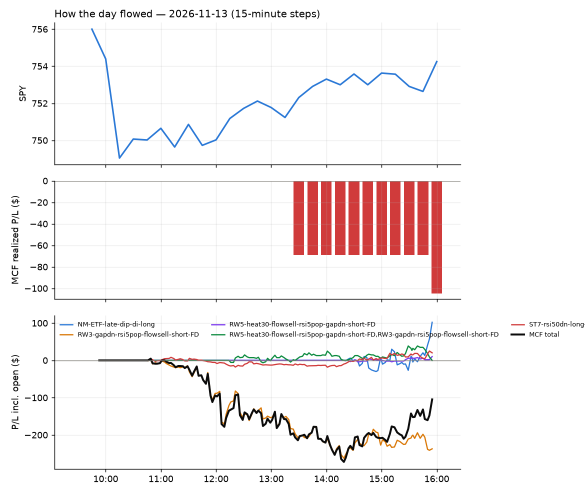
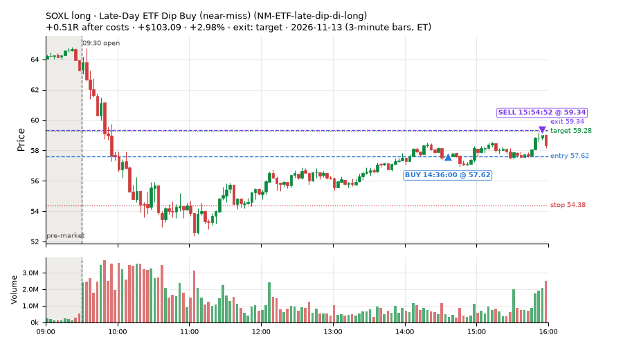
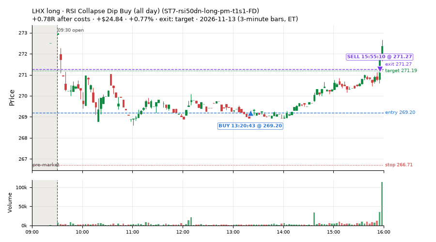
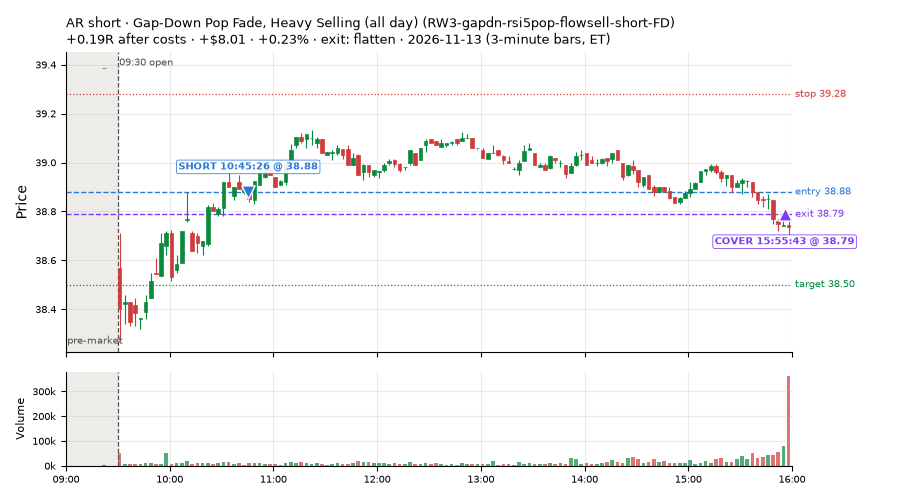
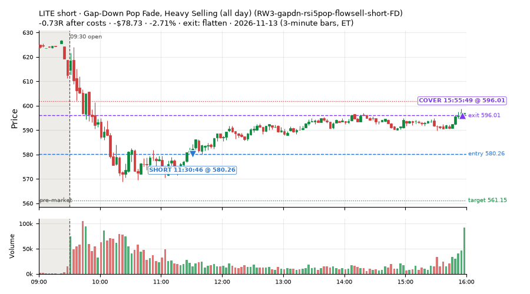
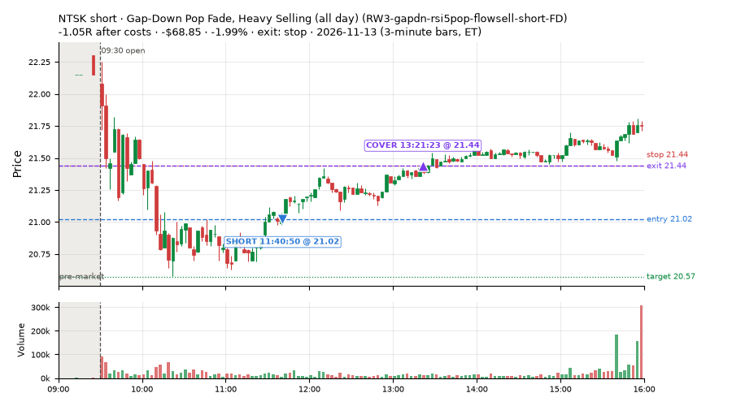
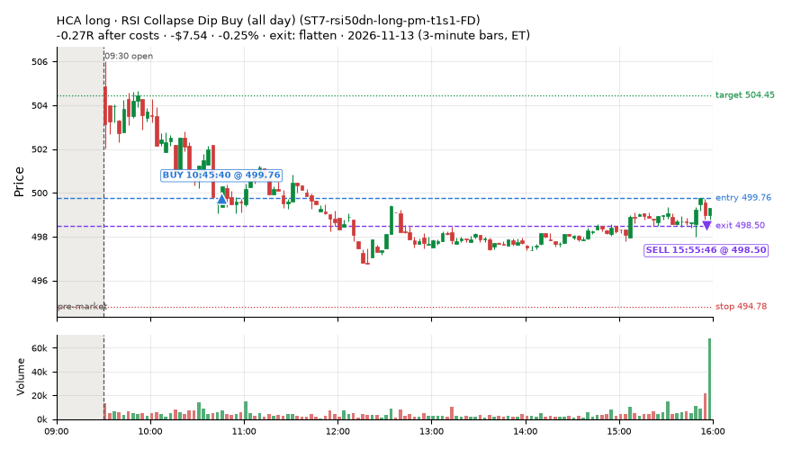
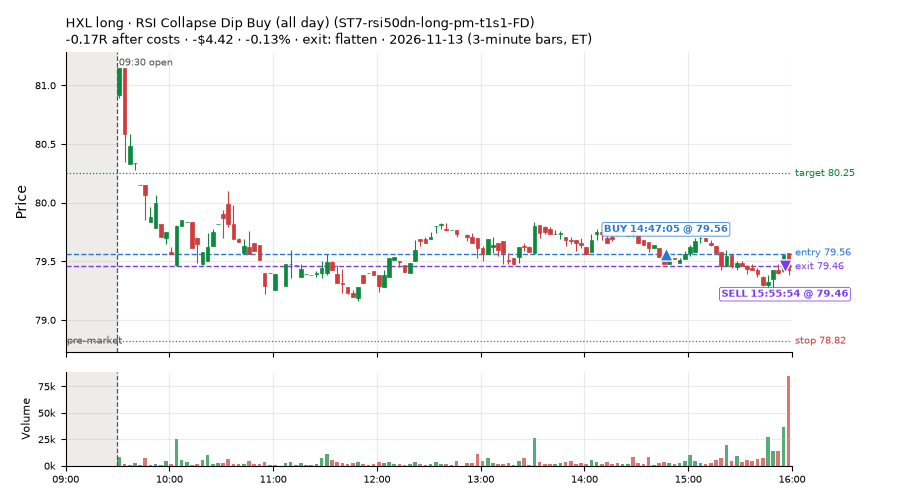

13 trades · win rate 54% · P/L $-104.65
PROBATION: no live setup has passed both locked test periods. 10 owner-directed setups added 2026-10-08 (MarcoFlow top 5 + 5 new), untested live. RW6G1 (RW6 + VWAP band guard) added 2026-10-09, probation.

| Symbol | Setup | Side | In | Out | Entry | Exit | Exit reason | % gained | P/L |
|---|---|---|---|---|---|---|---|---|---|
| SOXL | Late-Day ETF Dip Buy (near-miss) (NM-ETF-late-dip-di-long) | long | 14:36 | 15:54 | 57.62 | 59.34 | target | +2.98% | $103.09 |
| LHX | RSI Collapse Dip Buy (all day) (ST7-rsi50dn-long-pm-t1s1-FD) | long | 13:20 | 15:55 | 269.20 | 271.27 | target | +0.77% | $24.84 |
| AR | Gap-Down Pop Fade, Heavy Selling (all day) (RW3-gapdn-rsi5pop-flowsell-short-FD) | short | 10:45 | 15:55 | 38.88 | 38.79 | flatten | +0.23% | $8.01 |
| Symbol | Setup | Side | In | Out | Entry | Exit | Exit reason | % lost | P/L |
|---|---|---|---|---|---|---|---|---|---|
| MRVL | RW3-gapdn-rsi5pop-flowsell-short-FD | short | 11:30 | 15:50 | 152.75 | 157.48 | stop | -3.10% | $-104.06 |
| LITE | RW3-gapdn-rsi5pop-flowsell-short-FD | short | 11:30 | 15:55 | 580.26 | 596.01 | flatten | -2.71% | $-78.73 |
| NTSK | RW3-gapdn-rsi5pop-flowsell-short-FD | short | 11:40 | 13:21 | 21.02 | 21.44 | stop | -1.99% | $-68.85 |
| HCA | ST7-rsi50dn-long-pm-t1s1-FD | long | 10:45 | 15:55 | 499.76 | 498.50 | flatten | -0.25% | $-7.54 |
| HXL | ST7-rsi50dn-long-pm-t1s1-FD | long | 14:47 | 15:55 | 79.56 | 79.46 | flatten | -0.13% | $-4.42 |







Signal to fill: median 2s, 90th percentile 4s (13 trades). Bars close each minute; the order follows the bar close.
Best excursion (MFE): median 0.30R; worst (MAE) median 0.43R. 46% of trades never got +0.25R in our favour; 0 reached +1R and still closed at or below 0.
| Symbol | Setup | Best R | Worst R | Closed R |
|---|---|---|---|---|
| MRVL | RW3-gapdn-rsi5pop-flowsell-short-FD | +0.10 | -1.03 | -1.01 |
| NTSK | RW3-gapdn-rsi5pop-flowsell-short-FD | +0.05 | -1.00 | -1.05 |
| LITE | RW3-gapdn-rsi5pop-flowsell-short-FD | +0.03 | -0.86 | -0.73 |
| HCA | ST7-rsi50dn-long-pm-t1s1-FD | +0.30 | -0.60 | -0.27 |
| HXL | ST7-rsi50dn-long-pm-t1s1-FD | +0.20 | -0.43 | -0.17 |
| Entry time | Trades | Win | Avg R | P/L |
|---|---|---|---|---|
| 10:30-11:30 | 2 | 50% | -0.04 | $0.47 |
| 11:30-13:00 | 5 | 40% | -0.52 | $-238.76 |
| 13:00-14:00 | 2 | 100% | +0.48 | $32.12 |
| 14:00-16:00 | 4 | 50% | +0.06 | $101.52 |
| Setup | Trades | Win | Avg R after costs | Adj R (net of SPY) | Avg R ex-market (all sessions) | P/L |
|---|---|---|---|---|---|---|
| Late-Day ETF Dip Buy (near-miss) (NM-ETF-late-dip-di-long) | 2.0 | 50% | +0.22 | +0.18 | – | $102.15 |
| Gap-Down Pop Fade, Heavy Selling (all day) (RW3-gapdn-rsi5pop-flowsell-short-FD) | 5.0 | 40% | -0.50 | -0.28 | +0.03 (beta -1.10, n 133) | $-237.19 |
| Gap-Down Pop Fade (all day) (RW5-heat30-flowsell-rsi5pop-gapdn-short-FD) | 2.0 | 100% | +0.04 | +0.26 | +0.00 (beta -0.96, n 152) | $10.23 |
| RSI Collapse Dip Buy (all day) (ST7-rsi50dn-long-pm-t1s1-FD) | 4.0 | 50% | +0.13 | -0.19 | +0.16 (beta +0.25, n 27) | $20.16 |
Market direction (SPY, beta 1) accounted for $-42.79 of today's $-104.65; the rest ($-61.86) came from the setups themselves. Avg R net of SPY: -0.10 (incl. a hedge leg's cost; report only).
6 setups live today. Today: 61 signals, 13 taken, 0 lost because another setup held the symbol (0%). Since 2026-10-06 (29 sessions): 5127 signals, 1235 taken, 172 lost to other setups (3%). Peak open positions today 12 of 77 slots. Earnings blackout removed 547 symbols before scanning.
Simulated playing time (not live): 3867 what-if trades of signals not taken, avg +0.12R, 63% winners; of them 172 lost to another setup (avg -0.18R).
Silent: intraday_momentum · Crowded out: MF4-h40-open-flowsell, MF3-open-flowsell-rsi5hi, MF5-flowsell-vwapup-rsi5hi · Starved: MF2-open-rsimidhi-flowsell
| Prio | Setup | Today sig / taken | Sessions | Signals / taken / trades | Taken/day | Expected/day | Lost to other setups | Lost to (setup n) | Top skip reasons | SIMULATED: not-taken n / avg R / win | Verdict |
|---|---|---|---|---|---|---|---|---|---|---|---|
| 1 | Late-Day ETF Dip Buy (near-miss) NM-ETF-late-dip-di-long | 2 / 2 | 3 | 3 / 3 / 3 | 1.00 | – | 0 | – | – | 0 / – | slow 5.0 entries/week; ~12 weeks to 60 trades |
| 2 | Gap-Down Pop Fade (all day) RW5-heat30-flowsell-rsi5pop-gapdn-short-FD | 3 / 2 | 21 | 218 / 152 / 152 | 7.24 | 12.79 | 0 | – | spread / quote / size 25, daily loss cap 21, not shortable / shorts off 20 | 66 / -0.10R / 42% | ok 36.2 entries/week |
| 3 | Gap-Down Pop Fade, Heavy Selling (all day) RW3-gapdn-rsi5pop-flowsell-short-FD | 9 / 5 | 21 | 230 / 133 / 133 | 6.33 | 13.59 | 1 | CWT14-failbrk-pdl-p10-lowvol-long 1 | daily loss cap 33, not shortable / shorts off 32, spread / quote / size 31 | 97 / +0.11R / 56% | ok 31.7 entries/week |
| 4 | RSI Collapse Dip Buy (all day) ST7-rsi50dn-long-pm-t1s1-FD | 5 / 4 | 15 | 51 / 27 / 27 | 1.80 | 2.17 | 0 | – | spread / quote / size 22, daily loss cap 2 | 24 / +0.28R / 62% | slow 9.0 entries/week; ~7 weeks to 60 trades |
| 5 | Gap-Down Recovery Fade (all day) L3-gap-slope-fromopen-FD | 42 / 0 | 13 | 2725 / 118 / 118 | 9.08 | – | 33 | L3-gap-slope-fromopen-FD 33, L3-gap-slope-rsi5hi-FD 14 | not shortable / shorts off 1743, per-setup cap 648, daily loss cap 106 | 2602 / +0.20R / 66% | ok 45.4 entries/week |
| 6 | Big Loser Flush Buy NS5-sma50-flush-oversold-long | 0 / 0 | 27 | 53 / 35 / 35 | 1.30 | 2.41 | 0 | – | daily loss cap 13, spread / quote / size 5 | 18 / +0.07R / 56% | slow 6.5 entries/week; ~9 weeks to 60 trades |
Every trade is attached as a CSV you can open and edit in Excel or Google Sheets. Live page: https://misiti15.github.io/MCF/live/